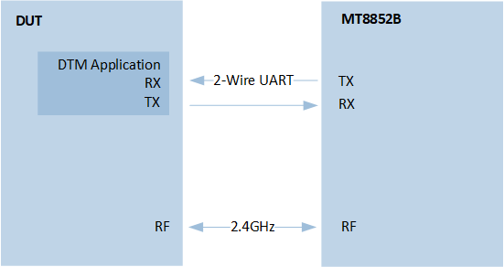
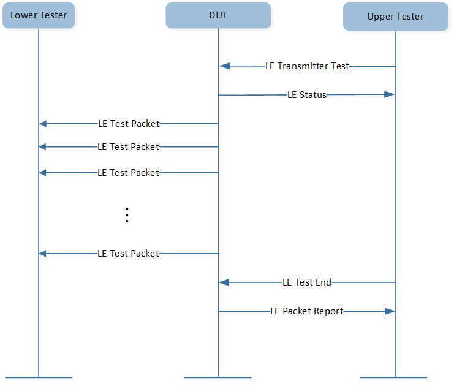
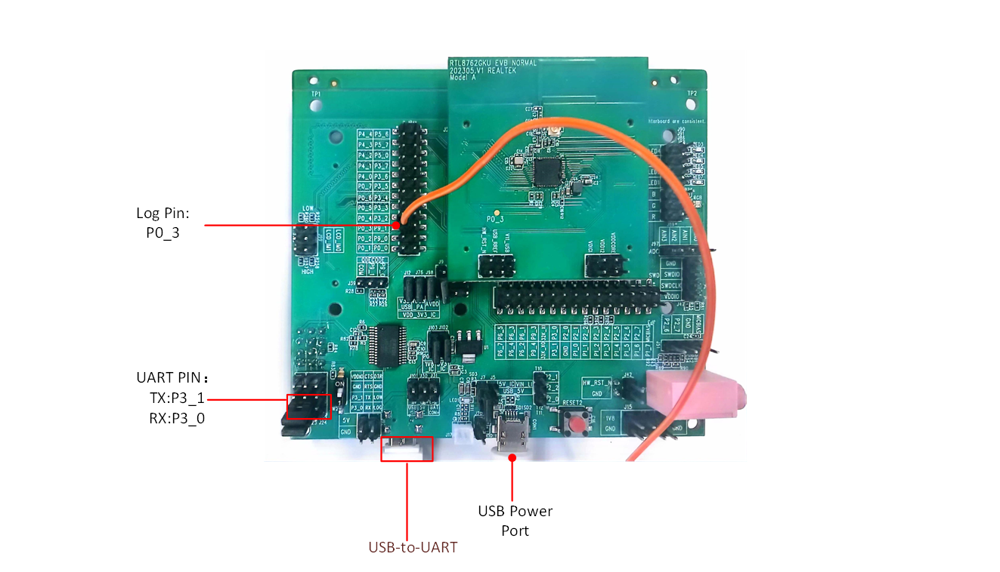
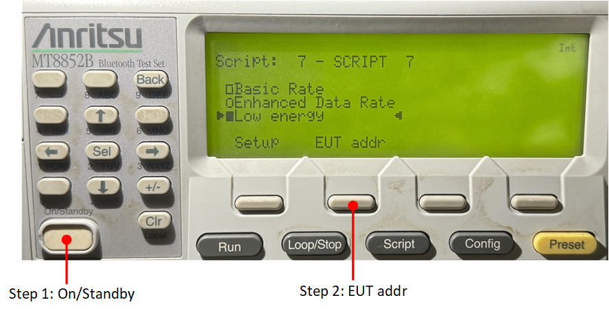
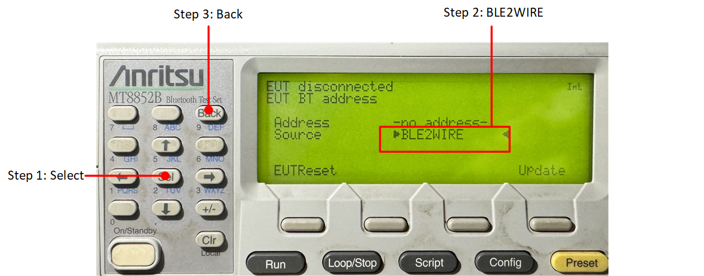

LE DTM
DTM 用于控制 DUT，并向 Tester 提供测试报告。
概述
Direct Test Mode 用于测试低功耗蓝牙设备的 RF PHY 层。 DTM 可以通过两种方式设置：基于 HCI 或者通过一个 2-wire UART 接口。
在本文档中， DTM 通过第二种方式设置，即通过一个 2-wire UART 接口。其测试框架如图所示：
{kind=link}

测试框架
DUT 运行 DTM 应用，测试设备 MT8852B 向 DUT 发送 DTM 命令。
DTM 应用分析收到的命令并调用相应接口以向 MT8852B 发送数据包 (transmitter test) 或从 MT8852B 接收数据包 (receiver test)。
DTM 应用收集测试结果，并通过 DTM 事件发送给 MT8852B。
MT8852B 根据 DTM 事件判断并显示测试结果。
发射测试
{kind=link}

Transmitter Test
Upper tester 向 DUT 发送命令，使 DUT 发送测试数据包给 lower tester。发送流程结束后，DUT 会向 upper tester 回报事件。
输出功率测试
MT8852B 通过 RS232、USB 或 2-wire 接口发送测试控制信息，以指导 DUT 发送相应测试数据包。MT8852B 至少在 20%~80% 的 burst 持续时间内测量接收数据包的平均功率。
载波 & 漂移测试
基于接收数据包的长度，载波漂移测试执行频率漂移测量。以与基本速率初始载波测试类似的方式测量载波频率偏移，只针对 low energy 相关数据包的 8 位前同步码。
调制指数测试
针对选择的频率范围 (LOW、MEDIUM 和 HIGH)，该测试测量 DUT 输出的调制特性。
接收测试

Receiver Test
Upper tester 向 DUT 发送命令，使 DUT 准备接收 lower tester 发送的测试数据包。lower tester 发送测试数据包给 DUT，接收流程结束后，DUT 向 upper tester 回报事件。
- 灵敏度测试
在向 DUT 发送测试控制信息后，MT8852B 向 DUT 发送 LE 相关数据包。DUT 统计收到数据包的数目，MT8852B 通过 2-wire 接口读取该参数。
- 最大输入功率测试
在向 DUT 发送测试控制信息后，MT8852B 以 -10 dBm 发射功率向 DUT 发送 LE 相关数据包。DUT 记录接收数据包的数目，MT8852B 通过 2-Wire 接口读取该参数。
环境要求
该 sample 工程可以在以下开发板上运行:
Hardware Platforms |
Board Name |
|---|---|
RTL87x2G HDK |
RTL87x2G EVB |
为快速搭建起开发环境，可参考 快速入门 中提供的详细指导。
硬件连线
编译和下载
该示例可以在 SDK 文件夹中找到:
Project file: samples\bluetooth\dtm\proj\rtl87x2g\mdk
Project file: samples\bluetooth\dtm\proj\rtl87x2g\gcc
编译和运行该示例请遵循以下步骤:
打开项目文件。
要编译目标文件， 请参考 快速入门 中的 编译 APP Image。
编译成功后，目录
samples\bluetooth\dtm\proj\rtl87x2g\mdk\bin下会生成 APP bin 文件app_MP_sdk_xxx.bin。在 EVB 上按下 reset 按钮，工程将开始运行。
测试验证
本章节将对测试步骤和测试结果进行详细介绍。
准备步骤
下载 DTM 应用
编译和下载 dtm 应用到 DUT。
连接 DUT 和 MT8852B
第一步是使用 RS232，通过 2-wire UART 连接 DUT 和 MT8852B，DUT 的 TX 引脚和 RX 引脚应与 RS232 的对应引脚相连。
DTM 应用默认将 P3_1 设为 Data UART 的 TX 引脚，将 P3_0 设为 Data UART 的 RX 引脚。
#define DATA_UART_TX_PIN P3_1
#define DATA_UART_RX_PIN P3_0

MT8852B 的 UART
{kind=link}

DUT 的 UART
测试步骤
测试步骤包括配置设备和运行 MT8852B。
配置 DUT 和 MT8852B
如图所示，按 On/Standby 按钮以启动 MT8852B，然后按 EUT addr 按钮修改 EUT address。
{kind=link}

启动 MT8852B
先按 Sel 按钮，然后选择 BLE2WIRE 作为 Source。
{kind=link}

选择 EUT Address 中的 Source
按 Setup 按钮设置 Low energy 脚本。

设置 Low Energy 脚本
运行 MT8852B
根据测试用例运行 MT8852B。
运行所有测试用例
按 Run 按钮运行所有测试用例。

运行所有测试用例
运行单个测试用例
选择需要测试的用例，然后按 Single 按钮和 Run 按钮运行单个测试用例。

运行单个测试用例
测试结果
Pass 的测试结果如图所示，已经 Pass 的测试用例后面会显示字母 P。

DTM 测试结果
代码介绍
本章将按照以下几个部分进行介绍：
源码路径 中介绍项目目录和源代码文件。
Bluetooth Host 介绍 中介绍了 Bluetooth Host 相关信息。
章节 初始化 中介绍 DTM 参数和 Bluetooth Host 初始化。
章节 主要函数 中介绍 DTM 的函数。
章节 GAP 回调函数处理 中介绍 DTM 的 GAP 回调函数处理。
源码路径
工程目录:
samples\bluetooth\dtm\proj。源码目录:
samples\bluetooth\dtm\src。
dtm 工程中的源文件当前被分为几个组，如下所示：
└── Project: dtm
└── secure_only_app
└── Device Includes startup code.
├── CMSE Library Non-secure callable library
├── Lib Includes all binary symbol files that user application is built on.
├── ROM_NS.lib
└── lowerstack.lib
└── rtl87x2g_sdk.lib
└── gap_utils.lib
├── peripheral Includes all peripheral drivers and module code used by the application.
├── profile Includes LE profiles or services used by the sample application.
└── APP Includes the ble_scatternet user application implementation.
├── data_uart.c
├── app_task.c Create message queue and application task.
├── dtm_app.c Handle commands from MT8852B and return with events.
└── main.c Entry of application, initialize parameters, and register application message callback.
示例工程使用与 bt_host_0_0 匹配的默认 GAP LIB，更多信息可参阅文档 Host Image 中的章节 GAP LIB 的使用方法。
Bluetooth Host 介绍
示例工程默认使用 Bluetooth Host image 版本 bt_host_0_0，更多信息可参阅
Host Image。
关于 Bluetooth Host 所支持的蓝牙功能的详细信息，请参阅文件 bin\rtl87x2g\bt_host_image\bt_host_0_0\bt_host_config.h。
初始化
当 EVB 启动并且芯片复位时， main() 函数将被调用，它执行以下初始化函数：
int main(void)
{
le_gap_init(0);
gap_lib_init();
app_le_gap_init();
application_task_init();
os_sched_start();
return 0;
}
le_gap_init()用于初始化 GAP 并配置链接个数。app_le_gap_init()用于初始化 GAP 参数。
更多关于 LE GAP 初始化和启动流程的信息可查阅 LE Host 中的章节 GAP 参数的初始化。
主要函数
在 dtm_app.c 文件中，UART0_Handler() 接收来自 MT8852B 的命令。示例代码如下：
void UART0_Handler(void)
{
uint8_t uartdata[2] = {0, 0};
uint8_t *p = uartdata;
uint16_t command = 0;
uint32_t int_status = 0;
int_status = UART_GetIID(UART0);
UART_INTConfig(UART0, UART_INT_RD_AVA | UART_INT_LINE_STS, DISABLE);
switch (int_status)
{
case UART_INT_ID_TX_EMPTY:
break;
case UART_INT_ID_RX_LEVEL_REACH:
case UART_INT_ID_RX_TMEOUT:
while (UART_GetFlagState(UART0, UART_FLAG_RX_DATA_RDY) == SET)
{
UART_ReceiveData(UART0, p++, 1);
if (p - uartdata > 2)
{
break;
}
}
command = (uartdata[0] << 8) | uartdata[1];
APP_PRINT_INFO1("FORM 8852B: 0x%x", command);
dtm_test_req(command);
break;
case UART_INT_ID_LINE_STATUS:
break;
default:
break;
}
UART_INTConfig(UART0, UART_INT_RD_AVA, ENABLE);
return;
}
dtm_test_req() 处理来自 MT8852B 的测试命令，调用 GAP 层接口测试。示例代码如下：
void dtm_test_req(uint16_t command)
{
uint8_t contrl = 0;
uint8_t param = 0;
uint8_t tx_chann = 0;
uint8_t rx_chann = 0;
uint8_t data_len = 0;
uint8_t pkt_pl = 0;
uint8_t cmd = (command & 0xc000) >> 14;
uint16_t event = 0;
//the upper 2 bits of the data length for any Transmitter or Receiver commands following
static uint8_t up_2_bits = 0;
//physical to use
static uint8_t phy = 1;
//modulation index to use
static uint8_t mod_idx = 0;
//local supported features
static uint8_t lcl_feats[GAP_LE_SUPPORTED_FEATURES_LEN] = {0};
switch (cmd)
{
case 0:
contrl = (command & 0x3f00) >> 8;
param = (command & 0xfc) >> 2;
switch (contrl)
{
case 0:
if (param == 0)
{
up_2_bits = 0;
phy = 1;
mod_idx = 0;
}
else
{
event |= 1;
}
dtm_uart_send_bytes(event);
break;
......
case 5:
/*
MT8852B do not send these commands
0x00 Read supportedMaxTxOctets
0x01 Read supportedMaxTxTime
0x02 Read supportedMaxRxOctets
0x03 Read supportedMaxRxTime
*/
break;
default:
break;
}
APP_PRINT_INFO3("dtm_test_req: up_2_bits 0x%x, phy 0x%x, mod_idx 0x%x", up_2_bits, phy, mod_idx);
break;
......
}
}
dtm_uart_send_bytes() 向 MT8852B 发送事件。示例代码如下：
void dtm_uart_send_bytes(uint16_t event)
{
uint8_t uartdata[2] = {0};
uartdata[0] = (event & 0xff00) >> 8;
uartdata[1] = event & 0xff;
uint8_t *p_ch = uartdata;
uint8_t i = 0;
for (i = 0; i < 2; i++)
{
while (UART_GetFlagState(UART0, UART_FLAG_THR_EMPTY) != SET)
{
;
}
UART_SendData(UART0, p_ch++, 1);
}
}
GAP 回调函数处理
app_gap_callback() 函数用于处理 GAP 回调函数消息。
更多关于 GAP 回调函数的信息可以查阅 LE Host 中的章节 Bluetooth LE GAP 回调函数。
当测试开始时，GAP 层使用 GAP_MSG_LE_DTM_ENHANCED_RECEIVER_TEST 或者 GAP_MSG_LE_DTM_ENHANCED_TRANSMITTER_TEST 消息来通知 APP 执行 发射测试 或者 接收测试。示例代码如下：
T_APP_RESULT app_gap_callback(uint8_t cb_type, void *p_cb_data)
{
T_APP_RESULT result = APP_RESULT_SUCCESS;
T_LE_CB_DATA *p_data = (T_LE_CB_DATA *)p_cb_data;
uint16_t status = 0;
uint16_t event = 0;
APP_PRINT_INFO1("app_gap_callback: cb_type %d", cb_type);
switch (cb_type)
{
......
#if F_BT_LE_5_0_DTM_SUPPORT
case GAP_MSG_LE_DTM_ENHANCED_RECEIVER_TEST:
#endif
status = p_data->le_cause.cause;
if (status == 0)
{
APP_PRINT_INFO2("app_gap_callback: event 0x%x, status 0x%x", (event & 0x8000) >> 15, event & 0x1);
}
else
{
event |= 1;
APP_PRINT_INFO2("app_gap_callback: event 0x%x, status 0x%x", (event & 0x8000) >> 15, event & 0x1);
}
dtm_uart_send_bytes(event);
break;
......
#if F_BT_LE_5_0_DTM_SUPPORT
case GAP_MSG_LE_DTM_ENHANCED_TRANSMITTER_TEST:
#endif
status = p_data->le_cause.cause;
if (status == 0)
{
APP_PRINT_INFO2("app_gap_callback: event 0x%x, status 0x%x", (event & 0x8000) >> 15, event & 0x1);
}
else
{
event |= 1;
APP_PRINT_INFO2("app_gap_callback: event 0x%x, status 0x%x", (event & 0x8000) >> 15, event & 0x1);
}
dtm_uart_send_bytes(event);
break;
case GAP_MSG_LE_DTM_TEST_END:
status = p_data->p_le_dtm_test_end_rsp->cause;
if (status == 0)
{
event |= 1 << 15;
event |= p_data->p_le_dtm_test_end_rsp->num_pkts;
APP_PRINT_INFO2("app_gap_callback: event 0x%x, packet count 0x%x", (event & 0x8000) >> 15,
event & 0x7fff);
}
else
{
event |= 1;
APP_PRINT_INFO2("app_gap_callback: event 0x%x, status 0x%x", (event & 0x8000) >> 15, event & 0x1);
}
dtm_uart_send_bytes(event);
break;
}
return result;
}
See Also
相关 API Reference 请查看：